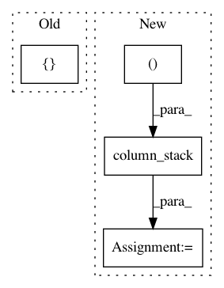

b1de080823e41b921bec2949db2b6c3cb1f1d5ef,examples/plot_feature_rep.py,,,#,30
Before Change
y = data["y"]
// create a feature representation pipeline
feed = Pipeline([("segment", Segment()),
("features", SegFeatures(features = base_features()))])
est = Pipeline([("scaler", StandardScaler()),
("rf", RandomForestClassifier())])
pipe = SegPipe(feed, est)
After Change
print("Accuracy score: ", score)
// now lets add some contextual data
Xc = np.column_stack((data["side"], data["subject"]))
X = make_ts_data(data["X"], Xc)
y = data["y"]
// and do a cross validation
In pattern: SUPERPATTERN
Frequency: 3
Non-data size: 4
Instances
Project Name: dmbee/seglearn
Commit Name: b1de080823e41b921bec2949db2b6c3cb1f1d5ef
Time: 2018-03-11
Author: david.mo.burns@gmail.com
File Name: examples/plot_feature_rep.py
Class Name:
Method Name:
Project Name: interactiveaudiolab/nussl
Commit Name: 39e87ed373b44d9683b7aaee1f3c1b897ef1ab3b
Time: 2017-07-06
Author: daniel.felixkim@gmail.com
File Name: nussl/Duet.py
Class Name: Duet
Method Name: convert_peaks
Project Name: matplotlib/matplotlib
Commit Name: 4428da66f0dbcba105ca22d45c6da929954a1d9d
Time: 2020-05-10
Author: ty.cx123@gmail.com
File Name: lib/mpl_toolkits/mplot3d/art3d.py
Class Name: Path3DCollection
Method Name: do_3d_projection